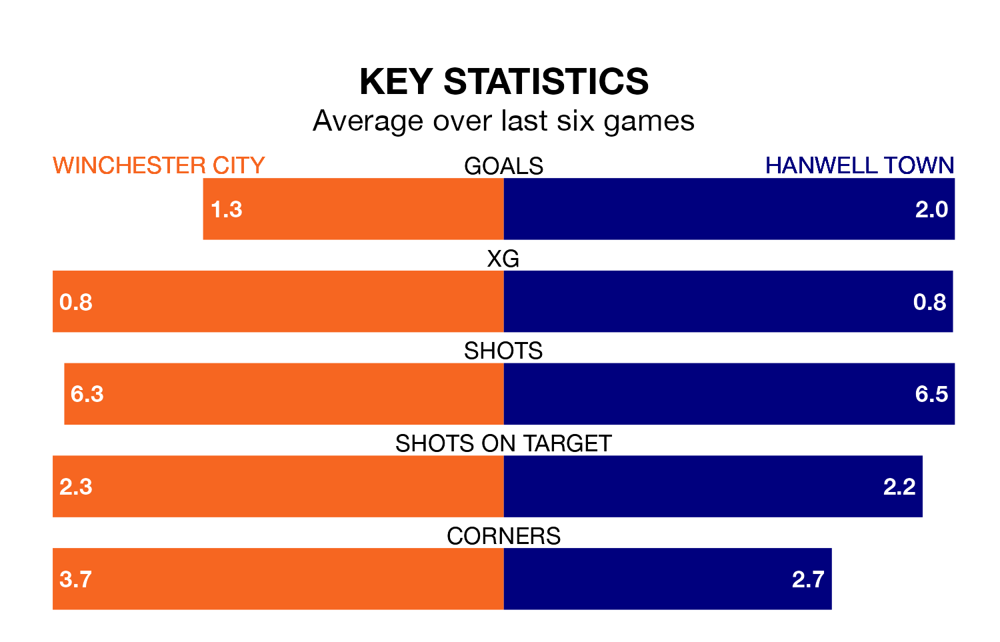

Hanwell Town travel to Winchester City on Saturday in the Southern League Premier South.
The visitors come into the game on the back of a draw in their last match, having tied with Dorchester Town 1-1 at home.
Winchester also drew their last match, 2-2 against Swindon Supermarine.
With 46 goals in 28 games so far this season, Winchester are scoring at below the league average rate with 1.6 goals per game. And they are conceding more than average, letting in 49 goals at a rate of 1.8 per game.
Hanwell, meanwhile, are average scorers, with 1.7 goals per game. They have conceded 1.9 goals per game.
Town are 16th in the table after 28 games, of which they have won eight and drawn nine, earning 33 points.
City are five places ahead of the away side in 11th, with 10 wins and nine draws putting them on 39 points.
The hosts are in mixed form in the Southern League Premier South, with two wins and a draw from their last six games.
With three wins and two draws over that period, Hanwell's form is better – they have taken 11 points from 18, compared to Winchester's seven.
In the last three years, Winchester and Hanwell have played each other on three occasions. They won one each, and they drew once.
Their last meeting was on October 14, when they played out a 4-4 draw.
Updated: 09:02 (UTC), 13/02/24